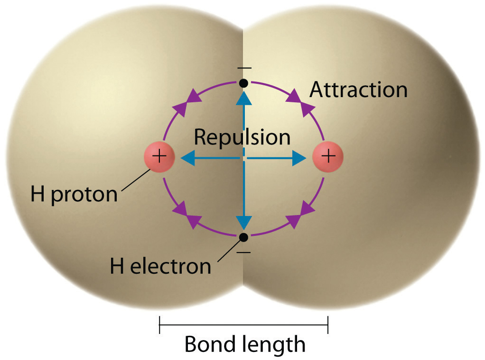
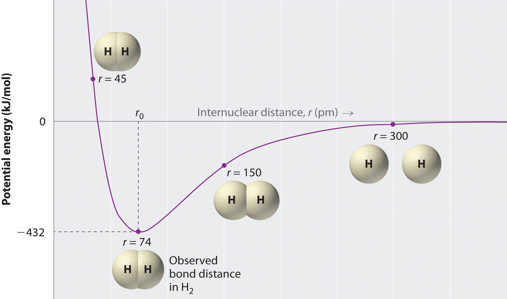
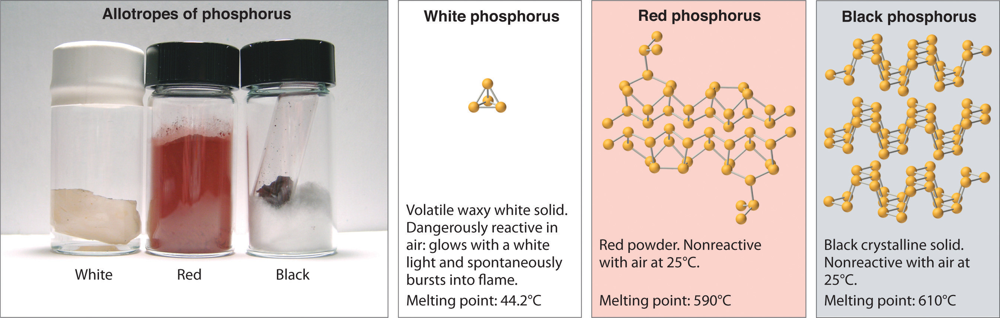

We begin our discussion of the relationship between structure and bonding in covalent compounds by describing the interaction between two identical neutral atoms—for example, the H2 molecule, which contains a purely covalent bond. Each hydrogen atom in H2 contains one electron and one proton, with the electron attracted to the proton by electrostatic forces. As the two hydrogen atoms are brought together, additional interactions must be considered (Figure 8.8 "Attractive and Repulsive Interactions between Electrons and Nuclei in the Hydrogen Molecule"):
Figure 8.8 Attractive and Repulsive Interactions between Electrons and Nuclei in the Hydrogen Molecule
Electron–electron and proton–proton interactions are repulsive; electron–proton interactions are attractive. At the observed bond distance, the repulsive and attractive interactions are balanced.
A plot of the potential energy of the system as a function of the internuclear distance (Figure 8.9 "A Plot of Potential Energy versus Internuclear Distance for the Interaction between Two Gaseous Hydrogen Atoms") shows that the system becomes more stable (the energy of the system decreases) as two hydrogen atoms move toward each other from r = ∞, until the energy reaches a minimum at r = r0 (the observed internuclear distance in H2 is 74 pm). Thus at intermediate distances, proton–electron attractive interactions dominate, but as the distance becomes very short, electron–electron and proton–proton repulsive interactions cause the energy of the system to increase rapidly. Notice the similarity between Figure 8.9 "A Plot of Potential Energy versus Internuclear Distance for the Interaction between Two Gaseous Hydrogen Atoms" and Figure 8.1 "A Plot of Potential Energy versus Internuclear Distance for the Interaction between a Gaseous Na", which described a system containing two oppositely charged ions. The shapes of the energy versus distance curves in the two figures are similar because they both result from attractive and repulsive forces between charged entities.
Figure 8.9 A Plot of Potential Energy versus Internuclear Distance for the Interaction between Two Gaseous Hydrogen Atoms
At long distances, both attractive and repulsive interactions are small. As the distance between the atoms decreases, the attractive electron–proton interactions dominate, and the energy of the system decreases. At the observed bond distance, the repulsive electron–electron and proton–proton interactions just balance the attractive interactions, preventing a further decrease in the internuclear distance. At very short internuclear distances, the repulsive interactions dominate, making the system less stable than the isolated atoms.
The valence electron configurations of the constituent atoms of a covalent compound are important factors in determining its structure, stoichiometry, and properties. For example, chlorine, with seven valence electrons, is one electron short of an octet. If two chlorine atoms share their unpaired electrons by making a covalent bond and forming Cl2, they can each complete their valence shell:
Each chlorine atom now has an octet. The electron pair being shared by the atoms is called a bonding pairA pair of electrons in a Lewis structure that is shared by two atoms, thus forming a covalent bond.; the other three pairs of electrons on each chlorine atom are called lone pairsA pair of electrons in a Lewis structure that is not involved in covalent bonding.. Lone pairs are not involved in covalent bonding. If both electrons in a covalent bond come from the same atom, the bond is called a coordinate covalent bondA covalent bond in which both electrons come from the same atom.. Examples of this type of bonding are presented in Section 8.6 "Exceptions to the Octet Rule" when we discuss atoms with less than an octet of electrons.
We can illustrate the formation of a water molecule from two hydrogen atoms and an oxygen atom using Lewis dot symbols:
The structure on the right is the Lewis electron structure, or Lewis structure, for H2O. With two bonding pairs and two lone pairs, the oxygen atom has now completed its octet. Moreover, by sharing a bonding pair with oxygen, each hydrogen atom now has a full valence shell of two electrons. Chemists usually indicate a bonding pair by a single line, as shown here for our two examples:
The following procedure can be used to construct Lewis electron structures for more complex molecules and ions:
1. Arrange the atoms to show specific connections. When there is a central atom, it is usually the least electronegative element in the compound. Chemists usually list this central atom first in the chemical formula (as in CCl4 and CO32−, which both have C as the central atom), which is another clue to the compound’s structure. Hydrogen and the halogens are almost always connected to only one other atom, so they are usually terminal rather than central.
The central atom is usually the least electronegative element in the molecule or ion; hydrogen and the halogens are usually terminal.
2. Determine the total number of valence electrons in the molecule or ion. Add together the valence electrons from each atom. (Recall from Chapter 6 "The Structure of Atoms" that the number of valence electrons is indicated by the position of the element in the periodic table.) If the species is a polyatomic ion, remember to add or subtract the number of electrons necessary to give the total charge on the ion. For CO32−, for example, we add two electrons to the total because of the −2 charge.
3. Place a bonding pair of electrons between each pair of adjacent atoms to give a single bond. In H2O, for example, there is a bonding pair of electrons between oxygen and each hydrogen.
4. Beginning with the terminal atoms, add enough electrons to each atom to give each atom an octet (two for hydrogen). These electrons will usually be lone pairs.
5. If any electrons are left over, place them on the central atom. We explain in Section 8.6 "Exceptions to the Octet Rule" that some atoms are able to accommodate more than eight electrons.
6. If the central atom has fewer electrons than an octet, use lone pairs from terminal atoms to form multiple (double or triple) bonds to the central atom to achieve an octet. This will not change the number of electrons on the terminal atoms.
Now let’s apply this procedure to some particular compounds, beginning with one we have already discussed.
1. Because H atoms are almost always terminal, the arrangement within the molecule must be HOH.
2. Each H atom (group 1) has 1 valence electron, and the O atom (group 16) has 6 valence electrons, for a total of 8 valence electrons.
3. Placing one bonding pair of electrons between the O atom and each H atom gives H:O:H, with 4 electrons left over.
4. Each H atom has a full valence shell of 2 electrons.
5. Adding the remaining 4 electrons to the oxygen (as two lone pairs) gives the following structure:
This is the Lewis structure we drew earlier. Because it gives oxygen an octet and each hydrogen two electrons, we do not need to use step 6.
1. With only two atoms in the molecule, there is no central atom.
2. Oxygen (group 16) has 6 valence electrons, and chlorine (group 17) has 7 valence electrons; we must add one more for the negative charge on the ion, giving a total of 14 valence electrons.
3. Placing a bonding pair of electrons between O and Cl gives O:Cl, with 12 electrons left over.
4. If we place six electrons (as three lone pairs) on each atom, we obtain the following structure:
Each atom now has an octet of electrons, so steps 5 and 6 are not needed. The Lewis electron structure is drawn within brackets as is customary for an ion, with the overall charge indicated outside the brackets, and the bonding pair of electrons is indicated by a solid line. OCl− is the hypochlorite ion, the active ingredient in chlorine laundry bleach and swimming pool disinfectant.
1. Because carbon is less electronegative than oxygen and hydrogen is normally terminal, C must be the central atom. One possible arrangement is as follows:
2. Each hydrogen atom (group 1) has one valence electron, carbon (group 14) has 4 valence electrons, and oxygen (group 16) has 6 valence electrons, for a total of [(2)(1) + 4 + 6] = 12 valence electrons.
3. Placing a bonding pair of electrons between each pair of bonded atoms gives the following:
Six electrons are used, and 6 are left over.
4. Adding all 6 remaining electrons to oxygen (as three lone pairs) gives the following:
Although oxygen now has an octet and each hydrogen has 2 electrons, carbon has only 6 electrons.
5. There are no electrons left to place on the central atom.
6. To give carbon an octet of electrons, we use one of the lone pairs of electrons on oxygen to form a carbon–oxygen double bond:

Both the oxygen and the carbon now have an octet of electrons, so this is an acceptable Lewis electron structure. The O has two bonding pairs and two lone pairs, and C has four bonding pairs. This is the structure of formaldehyde, which is used in embalming fluid.
An alternative structure can be drawn with one H bonded to O. Formal charges, discussed later in this section, suggest that such a structure is less stable than that shown previously.
Write the Lewis electron structure for each species.
Given: chemical species
Asked for: Lewis electron structures
Strategy:
Use the six-step procedure to write the Lewis electron structure for each species.
Solution:
Nitrogen is less electronegative than chlorine, and halogen atoms are usually terminal, so nitrogen is the central atom. The nitrogen atom (group 15) has 5 valence electrons and each chlorine atom (group 17) has 7 valence electrons, for a total of 26 valence electrons. Using 2 electrons for each N–Cl bond and adding three lone pairs to each Cl account for (3 × 2) + (3 × 2 × 3) = 24 electrons. Rule 5 leads us to place the remaining 2 electrons on the central N:
Nitrogen trichloride is an unstable oily liquid once used to bleach flour; this use is now prohibited in the United States.

In a diatomic molecule or ion, we do not need to worry about a central atom. Each sulfur atom (group 16) contains 6 valence electrons, and we need to add 2 electrons for the −2 charge, giving a total of 14 valence electrons. Using 2 electrons for the S–S bond, we arrange the remaining 12 electrons as three lone pairs on each sulfur, giving each S atom an octet of electrons:
Because nitrogen is less electronegative than oxygen or chlorine, it is the central atom. The N atom (group 15) has 5 valence electrons, the O atom (group 16) has 6 valence electrons, and the Cl atom (group 17) has 7 valence electrons, giving a total of 18 valence electrons. Placing one bonding pair of electrons between each pair of bonded atoms uses 4 electrons and gives the following:
Adding three lone pairs each to oxygen and to chlorine uses 12 more electrons, leaving 2 electrons to place as a lone pair on nitrogen:
Because this Lewis structure has only 6 electrons around the central nitrogen, a lone pair of electrons on a terminal atom must be used to form a bonding pair. We could use a lone pair on either O or Cl. Because we have seen many structures in which O forms a double bond but none with a double bond to Cl, it is reasonable to select a lone pair from O to give the following:
All atoms now have octet configurations. This is the Lewis electron structure of nitrosyl chloride, a highly corrosive, reddish-orange gas.
Exercise
Write Lewis electron structures for CO2 and SCl2, a vile-smelling, unstable red liquid that is used in the manufacture of rubber.
Answer:
Lewis dot symbols provide a simple rationalization of why elements form compounds with the observed stoichiometries. In the Lewis model, the number of bonds formed by an element in a neutral compound is the same as the number of unpaired electrons it must share with other atoms to complete its octet of electrons. For the elements of group 17 (the halogens), this number is one; for the elements of group 16 (the chalcogens), it is two; for group 15, three; and for group 14, four. These requirements are illustrated by the following Lewis structures for the hydrides of the lightest members of each group:
Elements may form multiple bonds to complete an octet. In ethylene, for example, each carbon contributes two electrons to the double bond, giving each carbon an octet (two electrons/bond × four bonds = eight electrons). Neutral structures with fewer or more bonds exist, but they are unusual and violate the octet rule.
Allotropes of an element can have very different physical and chemical properties because of different three-dimensional arrangements of the atoms; the number of bonds formed by the component atoms, however, is always the same. As noted at the beginning of the chapter, diamond is a hard, transparent solid; graphite is a soft, black solid; and the fullerenes have open cage structures. Despite these differences, the carbon atoms in all three allotropes form four bonds, in accordance with the octet rule. Elemental phosphorus also exists in three forms: white phosphorus, a toxic, waxy substance that initially glows and then spontaneously ignites on contact with air; red phosphorus, an amorphous substance that is used commercially in safety matches, fireworks, and smoke bombs; and black phosphorus, an unreactive crystalline solid with a texture similar to graphite (Figure 8.10 "The Three Allotropes of Phosphorus: White, Red, and Black"). Nonetheless, the phosphorus atoms in all three forms obey the octet rule and form three bonds per phosphorus atom.
Lewis structures explain why the elements of groups 14–17 form neutral compounds with four, three, two, and one bonded atom(s), respectively.
Figure 8.10 The Three Allotropes of Phosphorus: White, Red, and Black
All three forms contain only phosphorus atoms, but they differ in the arrangement and connectivity of their atoms. White phosphorus contains P4 tetrahedra, red phosphorus is a network of linked P8 and P9 units, and black phosphorus forms sheets of six-membered rings. As a result, their physical and chemical properties differ dramatically.
It is sometimes possible to write more than one Lewis structure for a substance that does not violate the octet rule, as we saw for CH2O, but not every Lewis structure may be equally reasonable. In these situations, we can choose the most stable Lewis structure by considering the formal chargeThe difference between the number of valence electrons in a free atom and the number of electrons assigned to it in a particular Lewis electron structure. on the atoms, which is the difference between the number of valence electrons in the free atom and the number assigned to it in the Lewis electron structure. The formal charge is a way of computing the charge distribution within a Lewis structure; the sum of the formal charges on the atoms within a molecule or an ion must equal the overall charge on the molecule or ion. A formal charge does not represent a true charge on an atom in a covalent bond but is simply used to predict the most likely structure when a compound has more than one valid Lewis structure.
To calculate formal charges, we assign electrons in the molecule to individual atoms according to these rules:
For each atom, we then compute a formal charge:
Equation 8.11
To illustrate this method, let’s calculate the formal charge on the atoms in ammonia (NH3) whose Lewis electron structure is as follows:
A neutral nitrogen atom has five valence electrons (it is in group 15). From its Lewis electron structure, the nitrogen atom in ammonia has one lone pair and shares three bonding pairs with hydrogen atoms, so nitrogen itself is assigned a total of five electrons [2 nonbonding e− + (6 bonding e−/2)]. Substituting into Equation 8.11, we obtain
Equation 8.12
A neutral hydrogen atom has one valence electron. Each hydrogen atom in the molecule shares one pair of bonding electrons and is therefore assigned one electron [0 nonbonding e− + (2 bonding e−/2)]. Using Equation 8.11 to calculate the formal charge on hydrogen, we obtain
Equation 8.13
The hydrogen atoms in ammonia have the same number of electrons as neutral hydrogen atoms, and so their formal charge is also zero. Adding together the formal charges should give us the overall charge on the molecule or ion. In this example, the nitrogen and each hydrogen has a formal charge of zero. When summed the overall charge is zero, which is consistent with the overall charge on the NH3 molecule.
Typically, the structure with the most charges on the atoms closest to zero is the more stable Lewis structure. In cases where there are positive or negative formal charges on various atoms, stable structures generally have negative formal charges on the more electronegative atoms and positive formal charges on the less electronegative atoms. The next example further demonstrates how to calculate formal charges.
Calculate the formal charges on each atom in the NH4+ ion.
Given: chemical species
Asked for: formal charges
Strategy:
Identify the number of valence electrons in each atom in the NH4+ ion. Use the Lewis electron structure of NH4+ to identify the number of bonding and nonbonding electrons associated with each atom and then use Equation 8.11 to calculate the formal charge on each atom.
Solution:
The Lewis electron structure for the NH4+ ion is as follows:
The nitrogen atom shares four bonding pairs of electrons, and a neutral nitrogen atom has five valence electrons. Using Equation 8.11, the formal charge on the nitrogen atom is therefore
Each hydrogen atom in has one bonding pair. The formal charge on each hydrogen atom is therefore
The formal charges on the atoms in the NH4+ ion are thus
Adding together the formal charges on the atoms should give us the total charge on the molecule or ion. In this case, the sum of the formal charges is 0 + 1 + 0 + 0 + 0 = +1.
Exercise
Write the formal charges on all atoms in BH4−.
Answer:
If an atom in a molecule or ion has the number of bonds that is typical for that atom (e.g., four bonds for carbon), its formal charge is zero.
An atom, molecule, or ion has a formal charge of zero if it has the number of bonds that is typical for that species.
As an example of how formal charges can be used to determine the most stable Lewis structure for a substance, we can compare two possible structures for CO2. Both structures conform to the rules for Lewis electron structures.
1. C is less electronegative than O, so it is the central atom.
2. C has 4 valence electrons and each O has 6 valence electrons, for a total of 16 valence electrons.
3. Placing one electron pair between the C and each O gives O–C–O, with 12 electrons left over.
4. Dividing the remaining electrons between the O atoms gives three lone pairs on each atom:

This structure has an octet of electrons around each O atom but only 4 electrons around the C atom.
5. No electrons are left for the central atom.
6. To give the carbon atom an octet of electrons, we can convert two of the lone pairs on the oxygen atoms to bonding electron pairs. There are, however, two ways to do this. We can either take one electron pair from each oxygen to form a symmetrical structure or take both electron pairs from a single oxygen atom to give an asymmetrical structure:
Both Lewis electron structures give all three atoms an octet. How do we decide between these two possibilities? The formal charges for the two Lewis electron structures of CO2 are as follows:
Both Lewis structures have a net formal charge of zero, but the structure on the right has a +1 charge on the more electronegative atom (O). Thus the symmetrical Lewis structure on the left is predicted to be more stable, and it is, in fact, the structure observed experimentally. Remember, though, that formal charges do not represent the actual charges on atoms in a molecule or ion. They are used simply as a bookkeeping method for predicting the most stable Lewis structure for a compound.
The Lewis structure with the set of formal charges closest to zero is usually the most stable.
The thiocyanate ion (SCN−), which is used in printing and as a corrosion inhibitor against acidic gases, has at least two possible Lewis electron structures. Draw two possible structures, assign formal charges on all atoms in both, and decide which is the preferred arrangement of electrons.
Given: chemical species
Asked for: Lewis electron structures, formal charges, and preferred arrangement
Strategy:
A Use the step-by-step procedure to write two plausible Lewis electron structures for SCN−.
B Calculate the formal charge on each atom using Equation 8.11.
C Predict which structure is preferred based on the formal charge on each atom and its electronegativity relative to the other atoms present.
Solution:
A Possible Lewis structures for the SCN− ion are as follows:
B We must calculate the formal charges on each atom to identify the more stable structure. If we begin with carbon, we notice that the carbon atom in each of these structures shares four bonding pairs, the number of bonds typical for carbon, so it has a formal charge of zero. Continuing with sulfur, we observe that in (a) the sulfur atom shares one bonding pair and has three lone pairs and has a total of six valence electrons. The formal charge on the sulfur atom is therefore In (b), the sulfur atom has two bonding pairs and two lone pairs, giving it a formal charge of zero. In (c), sulfur has a formal charge of +1. Completing our calculations with nitrogen, in (a) the nitrogen atom has three bonding pairs, giving it a formal charge of zero. In (b), the nitrogen atom has two lone pairs and shares two bonding pairs, giving it a formal charge of In (c), nitrogen has a formal charge of −2.
C Which structure is preferred? Structure (b) is preferred because the negative charge is on the more electronegative atom (N), and it has lower formal charges on each atom as compared to structure (c): 0, −1 versus +1, −2.
Exercise
Salts containing the fulminate ion (CNO−) are used in explosive detonators. Draw three Lewis electron structures for CNO− and use formal charges to predict which is more stable. (Note: N is the central atom.)
Answer:
The second structure is predicted to be more stable.
Sometimes, even when formal charges are considered, the bonding in some molecules or ions cannot be described by a single Lewis structure. Such is the case for ozone (O3), an allotrope of oxygen with a V-shaped structure and an O–O–O angle of 117.5°.
1. We know that ozone has a V-shaped structure, so one O atom is central:
2. Each O atom has 6 valence electrons, for a total of 18 valence electrons.
3. Assigning one bonding pair of electrons to each oxygen–oxygen bond gives
with 14 electrons left over.
4. If we place three lone pairs of electrons on each terminal oxygen, we obtain
and have 2 electrons left over.
5. At this point, both terminal oxygen atoms have octets of electrons. We therefore place the last 2 electrons on the central atom:
6. The central oxygen has only 6 electrons. We must convert one lone pair on a terminal oxygen atom to a bonding pair of electrons—but which one? Depending on which one we choose, we obtain either
Which is correct? In fact, neither is correct. Both predict one O–O single bond and one O=O double bond. As you will learn in Section 8.8 "Properties of Covalent Bonds", if the bonds were of different types (one single and one double, for example), they would have different lengths. It turns out, however, that both O–O bond distances are identical, 127.2 pm, which is shorter than a typical O–O single bond (148 pm) and longer than the O=O double bond in O2 (120.7 pm).
Equivalent Lewis dot structures, such as those of ozone, are called resonance structuresA Lewis electron structure that has different arrangements of electrons around atoms whose positions do not change.. The position of the atoms is the same in the various resonance structures of a compound, but the position of the electrons is different. Double-headed arrows link the different resonance structures of a compound:
The double-headed arrow indicates that the actual electronic structure is an average of those shown, not that the molecule oscillates between the two structures.
When it is possible to write more than one equivalent resonance structure for a molecule or ion, the actual structure is the average of the resonance structures.
Like ozone, the electronic structure of the carbonate ion cannot be described by a single Lewis electron structure. Unlike O3, though, the actual structure of CO32− is an average of three resonance structures.
1. Because carbon is the least electronegative element, we place it in the central position:
2. Carbon has 4 valence electrons, each oxygen has 6 valence electrons, and there are 2 more for the −2 charge. This gives 4 + (3 × 6) + 2 = 24 valence electrons.
3. Six electrons are used to form three bonding pairs between the oxygen atoms and the carbon:
4. We divide the remaining 18 electrons equally among the three oxygen atoms by placing three lone pairs on each and indicating the −2 charge:
5. No electrons are left for the central atom.
6. At this point, the carbon atom has only 6 valence electrons, so we must take one lone pair from an oxygen and use it to form a carbon–oxygen double bond. In this case, however, there are three possible choices:
As with ozone, none of these structures describes the bonding exactly. Each predicts one carbon–oxygen double bond and two carbon–oxygen single bonds, but experimentally all C–O bond lengths are identical. We can write resonance structures (in this case, three of them) for the carbonate ion:
The actual structure is an average of these three resonance structures.
Benzene is a common organic solvent that was previously used in gasoline; it is no longer used for this purpose, however, because it is now known to be a carcinogen. The benzene molecule (C6H6) consists of a regular hexagon of carbon atoms, each of which is also bonded to a hydrogen atom. Use resonance structures to describe the bonding in benzene.
Given: molecular formula and molecular geometry
Asked for: resonance structures
Strategy:
A Draw a structure for benzene illustrating the bonded atoms. Then calculate the number of valence electrons used in this drawing.
B Subtract this number from the total number of valence electrons in benzene and then locate the remaining electrons such that each atom in the structure reaches an octet.
C Draw the resonance structures for benzene.
Solution:
A Each hydrogen atom contributes 1 valence electron, and each carbon atom contributes 4 valence electrons, for a total of (6 × 1) + (6 × 4) = 30 valence electrons. If we place a single bonding electron pair between each pair of carbon atoms and between each carbon and a hydrogen atom, we obtain the following:
Each carbon atom in this structure has only 6 electrons and has a formal charge of +1, but we have used only 24 of the 30 valence electrons.
B If the 6 remaining electrons are uniformly distributed pairwise on alternate carbon atoms, we obtain the following:
Three carbon atoms now have an octet configuration and a formal charge of −1, while three carbon atoms have only 6 electrons and a formal charge of +1. We can convert each lone pair to a bonding electron pair, which gives each atom an octet of electrons and a formal charge of 0, by making three C=C double bonds.
C There are, however, two ways to do this:
Each structure has alternating double and single bonds, but experimentation shows that each carbon–carbon bond in benzene is identical, with bond lengths (139.9 pm) intermediate between those typically found for a C–C single bond (154 pm) and a C=C double bond (134 pm). We can describe the bonding in benzene using the two resonance structures, but the actual electronic structure is an average of the two. The existence of multiple resonance structures for aromatic hydrocarbons like benzene is often indicated by drawing either a circle or dashed lines inside the hexagon:

Exercise
The sodium salt of nitrite is used to relieve muscle spasms. Draw two resonance structures for the nitrite ion (NO2−).
Answer:
Resonance structures are particularly common in oxoanions of the p-block elements, such as sulfate and phosphate, and in aromatic hydrocarbons, such as benzene and naphthalene.
A plot of the overall energy of a covalent bond as a function of internuclear distance is identical to a plot of an ionic pair because both result from attractive and repulsive forces between charged entities. In Lewis electron structures, we encounter bonding pairs, which are shared by two atoms, and lone pairs, which are not shared between atoms. If both electrons in a covalent bond come from the same atom, the bond is called a coordinate covalent bond. Lewis structures are an attempt to rationalize why certain stoichiometries are commonly observed for the elements of particular families. Neutral compounds of group 14 elements typically contain four bonds around each atom (a double bond counts as two, a triple bond as three), whereas neutral compounds of group 15 elements typically contain three bonds. In cases where it is possible to write more than one Lewis electron structure with octets around all the nonhydrogen atoms of a compound, the formal charge on each atom in alternative structures must be considered to decide which of the valid structures can be excluded and which is the most reasonable. The formal charge is the difference between the number of valence electrons of the free atom and the number of electrons assigned to it in the compound, where bonding electrons are divided equally between the bonded atoms. The Lewis structure with the lowest formal charges on the atoms is almost always the most stable one. Some molecules have two or more chemically equivalent Lewis electron structures, called resonance structures. These structures are written with a double-headed arrow between them, indicating that none of the Lewis structures accurately describes the bonding but that the actual structure is an average of the individual resonance structures.
Compare and contrast covalent and ionic compounds with regard to
What are the similarities between plots of the overall energy versus internuclear distance for an ionic compound and a covalent compound? Why are the plots so similar?
Which atom do you expect to be the central atom in each of the following species?
Which atom is the central atom in each of the following species?
What is the relationship between the number of bonds typically formed by the period 2 elements in groups 14, 15, and 16 and their Lewis electron structures?
Although formal charges do not represent actual charges on atoms in molecules or ions, they are still useful. Why?
Why are resonance structures important?
In what types of compounds are resonance structures particularly common?
Give the electron configuration and the Lewis dot symbol for the following. How many more electrons can each atom accommodate?
Give the electron configuration and the Lewis dot symbol for the following. How many more electrons can each atom accommodate?
Based on Lewis dot symbols, predict the preferred oxidation state of Be, F, B, and Cs.
Based on Lewis dot symbols, predict the preferred oxidation state of Br, Rb, O, Si, and Sr.
Based on Lewis dot symbols, predict how many bonds gallium, silicon, and selenium will form in their neutral compounds.
Determine the total number of valence electrons in the following.
Determine the total number of valence electrons in the following.
Draw Lewis electron structures for the following.
Draw Lewis electron structures for the following.
Draw Lewis electron structures for CO2, NO2−, SO2, and NO2+. From your diagram, predict which pair(s) of compounds have similar electronic structures.
Write Lewis dot symbols for each pair of elements. For a reaction between each pair of elements, predict which element is the oxidant, which element is the reductant, and the final stoichiometry of the compound formed.
Write Lewis dot symbols for each pair of elements. For a reaction between each pair of elements, predict which element is the oxidant, which element is the reductant, and the final stoichiometry of the compound formed.
Use Lewis dot symbols to predict whether ICl and NO4− are chemically reasonable formulas.
Draw a plausible Lewis electron structure for a compound with the molecular formula Cl3PO.
Draw a plausible Lewis electron structure for a compound with the molecular formula CH4O.
While reviewing her notes, a student noticed that she had drawn the following structure in her notebook for acetic acid:
Why is this structure not feasible? Draw an acceptable Lewis structure for acetic acid. Show the formal charges of all nonhydrogen atoms in both the correct and incorrect structures.
A student proposed the following Lewis structure shown for acetaldehyde.
Why is this structure not feasible? Draw an acceptable Lewis structure for acetaldehyde. Show the formal charges of all nonhydrogen atoms in both the correct and incorrect structures.
Draw the most likely structure for HCN based on formal charges, showing the formal charge on each atom in your structure. Does this compound have any plausible resonance structures? If so, draw one.
Draw the most plausible Lewis structure for NO3−. Does this ion have any other resonance structures? Draw at least one other Lewis structure for the nitrate ion that is not plausible based on formal charges.
At least two Lewis structures can be drawn for BCl3. Using arguments based on formal charges, explain why the most likely structure is the one with three B–Cl single bonds.
Using arguments based on formal charges, explain why the most feasible Lewis structure for SO42− has two sulfur–oxygen double bonds.
At least two distinct Lewis structures can be drawn for N3−. Use arguments based on formal charges to explain why the most likely structure contains a nitrogen–nitrogen double bond.
Is H–O–N=O a reasonable structure for the compound HNO2? Justify your answer using Lewis electron dot structures.
Is H–O=C–H a reasonable structure for a compound with the formula CH2O? Use Lewis electron dot structures to justify your answer.
Explain why the following Lewis structure for SO32− is or is not reasonable.
Draw all the resonance structures for each ion.
[Ar]4s23d104p4
Selenium can accommodate two more electrons, giving the Se2− ion.
[Ar]4s23d104p6
Krypton has a closed shell electron configuration, so it cannot accommodate any additional electrons.
1s22s1
Lithium can accommodate one additional electron in its 2s orbital, giving the Li− ion.
[Kr]5s2
Strontium has a filled 5s subshell, and additional electrons would have to be placed in an orbital with a higher energy. Thus strontium has no tendency to accept an additional electron.
1s1
Hydrogen can accommodate one additional electron in its 1s orbital, giving the H− ion.
Be2+, F−, B3+, Cs+

K is the reductant; S is the oxidant. The final stoichiometry is K2S.
Sr is the reductant; Br is the oxidant. The final stoichiometry is SrBr2.
Al is the reductant; O is the oxidant. The final stoichiometry is Al2O3.
Mg is the reductant; Cl is the oxidant. The final stoichiometry is MgCl2.
The only structure that gives both oxygen and carbon an octet of electrons is the following:
The student’s proposed structure has two flaws: the hydrogen atom with the double bond has four valence electrons (H can only accommodate two electrons), and the carbon bound to oxygen only has six valence electrons (it should have an octet). An acceptable Lewis structure is
The formal charges on the correct and incorrect structures are as follows:
The most plausible Lewis structure for NO3− is:
There are three equivalent resonance structures for nitrate (only one is shown), in which nitrogen is doubly bonded to one of the three oxygens. In each resonance structure, the formal charge of N is +1; for each singly bonded O, it is −1; and for the doubly bonded oxygen, it is 0.
The following is an example of a Lewis structure that is not plausible:
This structure nitrogen has six bonds (nitrogen can form only four bonds) and a formal charge of –1.
With four S–O single bonds, each oxygen in SO42− has a formal charge of −1, and the central sulfur has a formal charge of +2. With two S=O double bonds, only two oxygens have a formal charge of –1, and sulfur has a formal charge of zero. Lewis structures that minimize formal charges tend to be lowest in energy, making the Lewis structure with two S=O double bonds the most probable.
Yes. This is a reasonable Lewis structure, because the formal charge on all atoms is zero, and each atom (except H) has an octet of electrons.